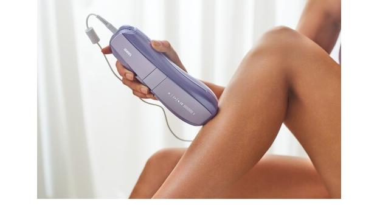

阶段判断：增长期，但内容系统仍像单点爆发
Air 10 已经具备明确卖点和媒体讨论度，但北美用户购买 IPL 设备时非常依赖真实使用周期、肤色/毛色适配、安全性和长期效果解释。Ulike 需要从“产品宣传”升级到“可信证明网络”。
Ulike 的核心问题不是产品力，而是能否把功效证明、真实体验和竞品拦截做成可复用的 creator 内容系统。

免费诊断只给方向和判断，不替代完整 TideLens 交付。
Air 10 已经具备明确卖点和媒体讨论度，但北美用户购买 IPL 设备时非常依赖真实使用周期、肤色/毛色适配、安全性和长期效果解释。Ulike 需要从“产品宣传”升级到“可信证明网络”。
官网强调 2 周可见结果、冰感和 10 分钟全身使用，但用户侧真正犹豫的是：是否适合自己肤色/毛色、是否能坚持、是否真的比沙龙/竞品更省心。
现阶段第一笔 KOL 预算不应平均撒到所有平台，也不应先买大曝光。更稳的是先验证 3 类 creator archetype 的内容角度，再放大有效素材。
每条判断只保留方向，不展开完整证据矩阵。
Air 10 的核心卖点包括快速处理、冰感冷却和短期可见效果。免费版判断：它适合用连续打卡、真实部位变化、肤色/毛色适配解释来建立信任，而不是只靠一次性开箱和折扣码。
用户搜索 at-home laser / IPL 时，会同时看到 Braun、Nood、CurrentBody 等竞品和媒体榜单。免费版只提示拦截方向；完整报告会拆解竞品在哪些平台、内容格式和 creator 层级上更有优势。
IPL 是高信任门槛品类。短视频可以做素材测试，但真正影响购买信心的往往是 dermatologist-style review、hair removal journey 和敏感肌/比基尼线等具体场景解释。
原因：Ulike 的主要增长瓶颈高度集中在内容证明、红人信任和竞品拦截。
30K-120K followers，能连续记录腿部、腋下、比基尼线等场景，重点拍“使用前顾虑”和“第 2/4/8 周变化”。
能解释 IPL 原理、肤色/毛色适配、安全边界、和沙龙 laser 的区别，适合做信任背书。
强调低痛感、冰感、红肿顾虑、使用步骤，适合把“安全感”拍出来。
覆盖 “Ulike vs Braun / Nood / CurrentBody” 这类高意图搜索，但免费版不展开站点名单。
免费版让客户知道我们看到了谁，但不交付完整 playbook。
一句判断：Braun 更容易承接“专业、安全、技术可信”的心智，尤其在高价 IPL 设备和媒体测评里有强背书。
一句判断：Nood 更偏 DTC challenger，容易在价格、对比和用户真实体验内容里和 Ulike 形成直接比较。
一句判断：CurrentBody 的优势更像 beauty tech portfolio 和 SEO review 场景，会抢占高意图用户搜索路径。
完整计划、数量、预算和 owner 进入 Full TideLens Report。
效果证明、低痛感/安全感、使用便利性。不要让所有达人都拍同一种“开箱 + 折扣码”。
TikTok KOC 和 YouTube reviewer 不是替代关系：一个补素材，一个补信任。先看哪类人最能解释购买顾虑。
第一笔钱应该跟着最急的增长缺口走。Ulike 的缺口更像 trust proof 和 content proof，而不是纯 reach。
这里展示具体轮廓，但不交付完整内容。
Braun / Nood / CurrentBody 的平台、内容格式、creator tier、可借鉴点和不建议模仿点。
标准付费报告直接包含候选 KOL 名单、筛选理由、优先级和合作风险。
Day 1-30 测试、Day 31-60 放大、Day 61-90 归因与复盘，不只给方向。
Low / Medium / Aggressive 三档预算，含平台、达人层级、样品和 paid boost 拆分。
TikTok proof brief、YouTube review brief、comparison hook、do/don't claim list。
英文触达模板、谈价口径、tracking sheet 字段和复盘口径。
完整报告适合已经准备认真投入北美 KOL / creator marketing 的品牌。Offing 会先确认品牌阶段、竞品范围和当前增长目标，再判断是否适合进入完整分析。
免费样稿只做方向判断，未接入品牌后台数据。
参考公开资料包括：Ulike 官方网站与 Air 10 产品页；Amazon Ulike Air 10 商品页；Vogue、Today、Cosmopolitan、Women's Health、Forbes Vetted 等近期测评/榜单；YouTube 公开 review；Reddit HairRemoval 社区讨论。关键事实需要在正式交付前再次复核。
Links: Ulike official · Ulike Air 10 · Amazon Air 10 · Today Ulike vs Nood · Cosmopolitan Air 10 review · Forbes Vetted laser devices.